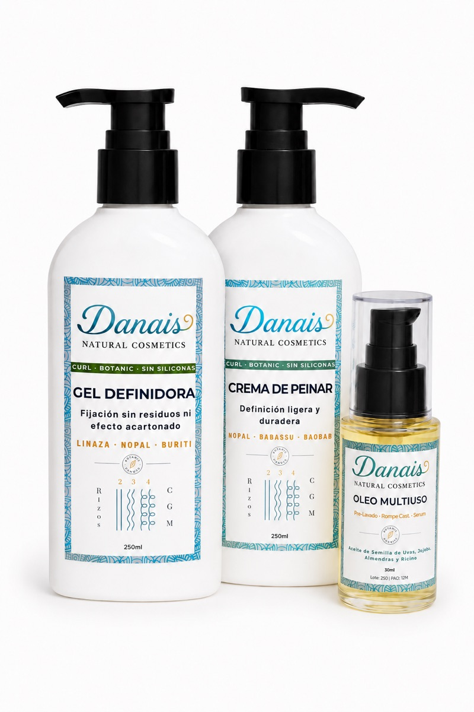
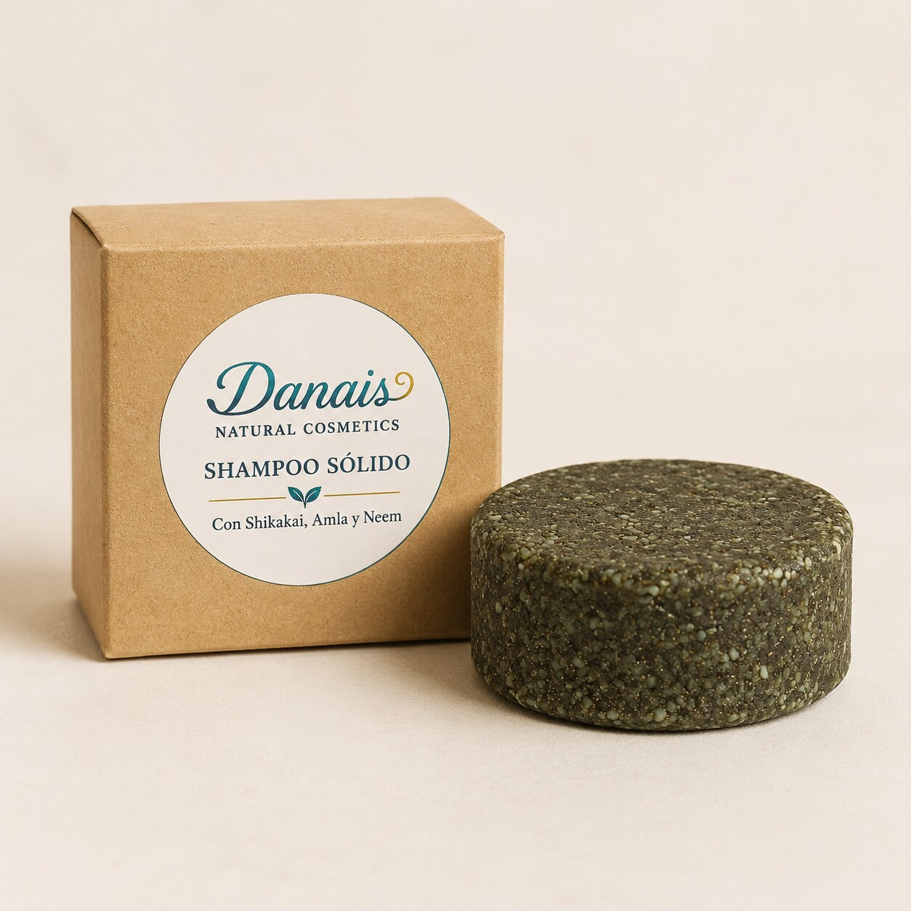
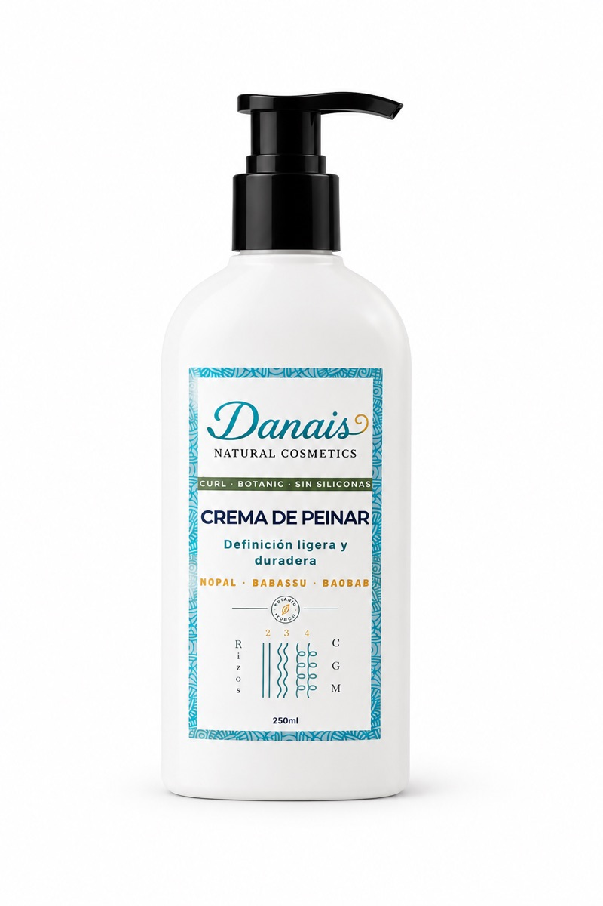
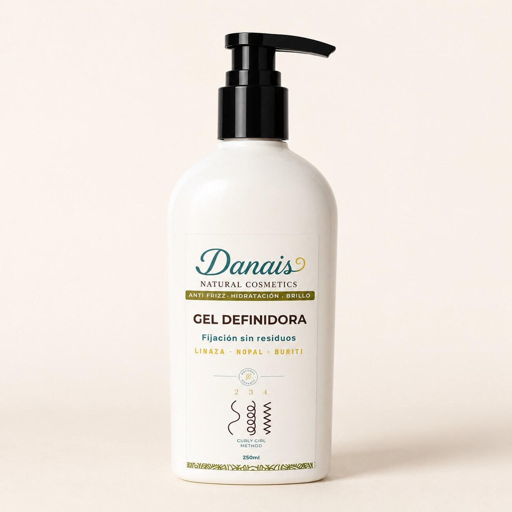

Línea Equilibrante
Nuestra colección
Fórmulas para cada paso de tu rutina. Con activos botánicos de origen rastreable, sin ingredientes que pesen el rizo.
Preventa · Septiembre 2026

Kit de Lavado
Shampoo Sólido Equilibrante + Acondicionador Sólido Desenredante
Ver detalles
Preventa · Septiembre 2026

Kit de Definición
Crema de Peinar Vegetal + Gel Definidora Vegetal + Óleo Multiuso
Ver detalles
Preventa · Septiembre 2026

Shampoo Sólido Equilibrante
Sin sulfatos · Shikakai · Amla · Neem
Ver detalles
Preventa · Septiembre 2026

Acondicionador Sólido Desenredante
Sin siliconas · Activos ayurvédicos · Karité
Ver detalles
Preventa · Septiembre 2026

Crema de Peinar Vegetal
Linaza · Mucina de Nopal · Aloe Vera
Ver detalles
Preventa · Septiembre 2026

Gel Definidora Vegetal
Linaza · Nopal · Burití · Fijación sin residuos
Ver detalles
Preventa · Septiembre 2026

Óleo Multiuso
Pre-lavado · Rompe Cast · Sérum de acabado
Ver detalles
Preventa · Septiembre 2026

Cobrizo Tierra
Baño de Color y Tratamiento Reparador · Henna · Hibisco
Ver detalles
Accesorio
Cepillo Bounce Curl
Accesorio complementarioEl favorito de las rizadas para distribuir productos con efecto diffusing sin romper el patrón. Diseñado para rizos 2A–4C.
Consultar disponibilidad